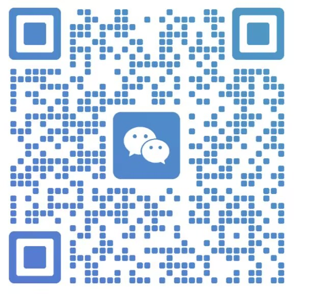

销售线索、客户跟进和话术分散在个人经验里，无法形成团队可复用的跟进节奏。
GUANGDONG / AI SYSTEM
广东传统企业 AI 系统
把 AI 放进销售、知识、内容与 SOP，不做停留在演示里的工具堆砌。
适合正在解决这些问题的广东企业
报价、产品资料、案例与制度不断累积，但员工找不到、用不动，也无法快速更新。
重复沟通、资料整理和跨部门交接靠人盯，流程一忙就失去标准和复盘依据。
内容生产依赖临时灵感，缺少从选题、素材到发布和复盘的稳定工作流。
从业务诊断到可执行工作流
- 诊断目标与瓶颈先明确岗位任务、现有资料和真正影响效率的环节。
- 设计 AI 介入方式把知识、提示词、表单和审核节点拼成贴合业务的流程。
- 搭建并接入团队完成工作台、知识库或 SOP 的落地，让团队在真实任务中开始使用。
- 陪跑与复盘根据使用反馈修正流程，让系统逐步成为团队资产。
交付内容
业务诊断
岗位任务盘点、资料现状与优先级建议。
AI 工作流
知识库、SOP、提示词和任务模板的组合设计。
团队启用
真实任务演练、使用反馈与持续优化节奏。
先从一个真实业务问题开始
如果你希望 AI 帮团队减少重复劳动、沉淀经验并推动业务，可以先描述你们当前最卡住的一步。
扫码添加微信